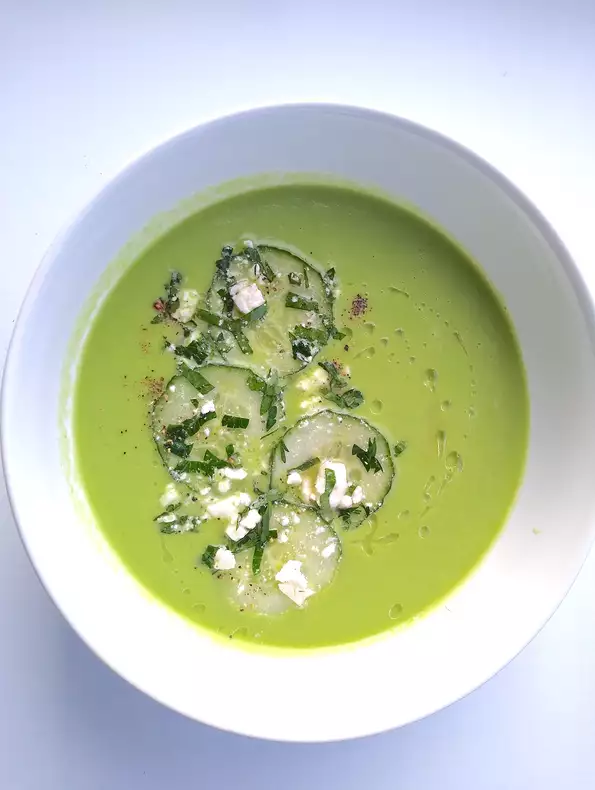

Gazpacho
Gazpacho recipe
Cucumber Gazpacho
Highlight
Ingredients
- 2 large English cucumbers
- 3 cups chopped honeydew melon
- 1 cup cubed crustless day-old white bread
- ¼ cup olive oil, plus extra for drizzling
- 1 tablespoon sherry vinegar
- 2 ¼ teaspoons kosher salt, plus more to taste
- ¼ cup crumbled feta cheese
- 2 teaspoons honey
Directions
- Thinly slice one of the cucumbers to equal 1/3 cup. Transfer cucumber slices to a small bowl; cover and chill until ready to use.
- Coarsely chop remaining cucumbers and transfer to a blender. Add honeydew, bread cubes, 1/4 cup oil, vinegar, and 2 1/4 teaspoons kosher salt. Process on low speed, gradually increasing speed to high, until cucumber mixture is very smooth and creamy, about 90 seconds.
- Pour gazpacho into a medium bowl. Cover and chill until cold, about 1 hour.
- Right before serving, toss together reserved cucumber slices, feta cheese, mint, honey, and a pinch of salt in a small bowl.
- Stir and ladle gazpacho into 4 shallow bowls. Top evenly with cucumber-feta mixture and drizzle with olive oil.